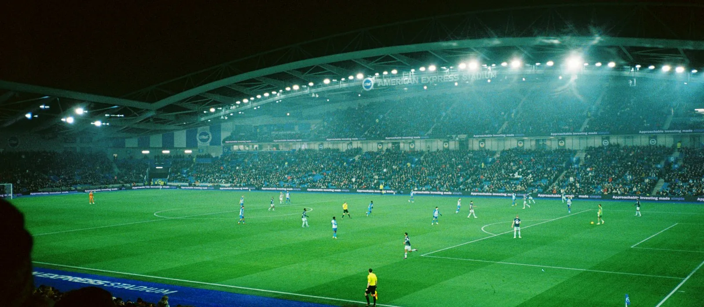

Resultados del fin de semana
Partidos ya disputados, viernes 18 y sábado 19 de septiembre.

Bundesliga · El más loco del fin de semana
Mönchengladbach 3-4 Mainz
Cinco cambios de marcador: 1-0, 1-1, 1-2, 2-2, 2-3, 2-4 y el descuento final en el 90'.
Ver tabla de la BundesligaPremier League
- Newcastle 2-1 Hull City
- Brentford 3-0 Chelsea
- Tottenham 2-3 Aston Villa
- Brighton 3-0 Arsenal
- Everton 1-0 Ipswich Town
- Nottingham Forest 0-1 Coventry City
LaLiga
- Espanyol 1-3 Elche
- Osasuna 1-1 Rayo Vallecano
- Athletic Bilbao 0-0 Alavés
- Celta de Vigo 5-0 Racing de Santander
- Sevilla 1-3 Barcelona
Serie A
- Roma 2-2 Inter
- Monza 2-1 Sassuolo
- Bologna 1-1 Torino
- Udinese 0-1 Cagliari
- Venezia 0-2 Lazio
Bundesliga
- Mönchengladbach 3-4 Mainz
- Bayern Múnich 7-0 Union Berlín
- Eintracht Frankfurt 2-2 Freiburg
- Hamburgo 2-1 Colonia
- Werder Bremen 3-2 Augsburgo
- Stuttgart 0-1 Borussia Dortmund